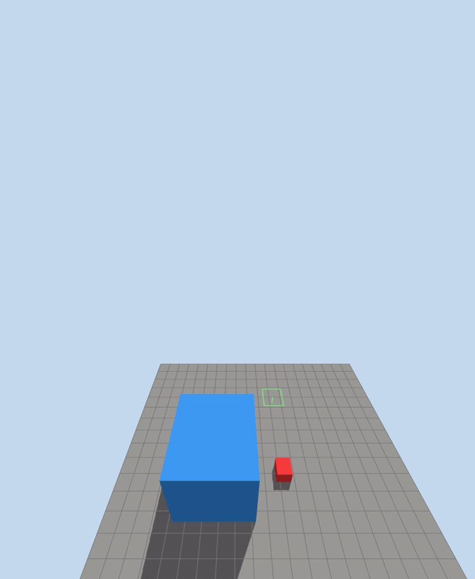
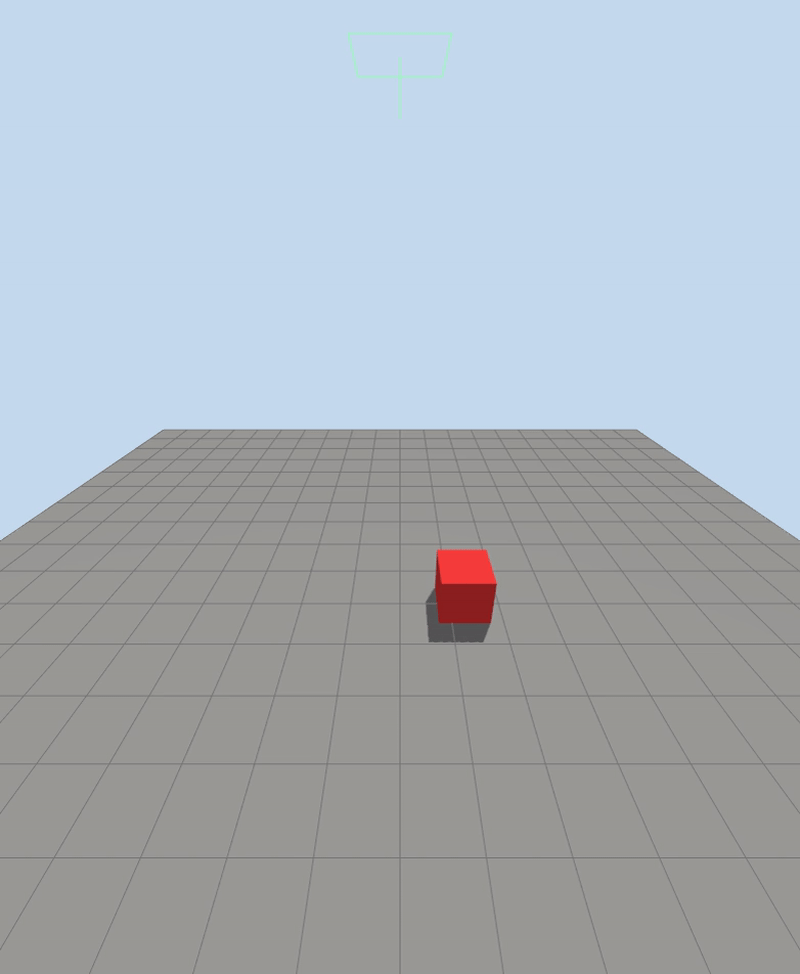

Gazebo wind effect
Gazebo wind starts as a world-level air velocity:
linear_velocity is the wind vector in the world frame, in meters per second.
For example, 5 0 0 means air moving toward +X.
The <wind> tag only defines the wind field. To make it create force on rigid
objects, load the WindEffects system plugin:
The plugin estimates a force for each affected link from:
- the link mass
- the link velocity relative to the wind velocity
- the scaling factor
Gazebo applies that force at the link frame origin. This is a simple wind model: it is good for pushing objects around, but it is not a full aerodynamic model.
Enable wind on a link
A link must opt in:
If enable_wind is missing or false, the object will ignore the wind even if the
world has a <wind> value and the plugin is loaded.
Wind velocity to force
A simple way to estimate wind force is the drag equation:
Where:
Fis force in newtonsrhois air density, about1.225 kg/m^3at sea levelCdis drag coefficientAis the area facing the windvis wind speed relative to the object
For a 1 x 1 x 1 m cube, the face area is:
A flat-front cube has a drag coefficient around:
With 5 m/s wind and a box that starts at rest:
For a 1 kg box, Newton's law gives:
This is the first-moment estimate, before friction and before the box starts moving with the wind. As the box velocity approaches the wind velocity, the relative wind speed goes down, so the force goes down too.
Gazebo WindEffects does not expose this exact drag equation in SDF. It uses a
simplified force approximation based on link mass and velocity relative to wind,
then multiplies it by force_approximation_scaling_factor. Use the math above
to choose a reasonable starting wind speed, then tune the scaling factor until
the simulation behavior matches the effect you want.
Demo: Simple box lab
The example world in wind_box_lab.sdf sets up a light dynamic box with low ground friction:
The ground and box both use low friction:
That makes the wind effect visible: the box does not need a large force before it starts sliding.
The copied lab file uses:
publish wind message (under 3m/s there in no movement):

both box slide in the same rate
The default wind system is intended to provide an inexpensive environmental disturbance applicable to arbitrary robots. It deliberately leaves real aerodynamics to specialized models The box mass and size not play part in wind effect
Demo : wind effect
- Steady wind: constant push in one direction, like 5 m/s from west to east.
- Gusts: short bursts of stronger wind.
- Turbulence/noise: random changing wind that makes the drone wobble.
- Vertical wind: updrafts/downdrafts that affect altitude hold.
- Wind shear: wind changes with altitude, useful for testing transitions.
- Directional changes: wind direction rotates over time.
- Localized wind zones: wind only inside an area, like near a fan, building, or obstacle.
- Wake/building effects: disturbed air behind objects, if your sim/plugin supports it.
Gusts

if we want the gust every 10 sec, replace the magnitude tag
- horizontal: Controls wind in the XY plane.
- magnitude: Controls wind strength, not direction.
- time_for_rise: Smooths changes instead of jumping instantly. Smaller = sharper gust, larger = softer ramp.
- sin: Makes the wind strength vary as a sine wave.
- amplitude_percent: How strong the variation is relative to base wind.
Example with base wind 3 m/s:
0.5 => varies about +/- 50% => 1.5 to 4.5 m/s 1.0 => varies about +/- 100% => 0 to 6 m/s
- period: How long one full gust cycle takes, in simulation seconds.
period 10 => full cycle every 10s - peak to peak = 10s - peak to low = 5s